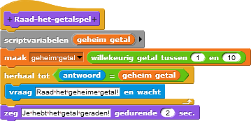

Debuggen en Je Raad-het-getalspel Uitbreiden
Op deze pagina, ga je een Raad-het-getalspel debuggen, en je gaat de computer laten zeggen of de getallen die de spelers hebben geraden te groot of te klein zijn.
- Analyseer en Debug. De definitie van een
Raad-het-getal-spelblok heeft een bug—een error / fout in de code dat het programma anders doet gedragen dan dat jij zou willen. Deze code, zou je het constant spelen, zal in de meeste gevallen wel werken, maar soms (niet altijd) zal het je feliciteren voordat je het getal hebt geraden.
This is a kind of debugging strategy (perhaps: "narrowing the possibilities"?). Do we want to say anything more about it? --MF, 3/21/18Als je dit bouwt om uit te proberen, zorg dat het random nummers selecteert van 1 tot 3 om de bug vaker voor te laten komen.
Analyseer de code, of experimenteer met het, en leg uit hoe dit kan gebeuren. - Als je het nog niet geopend hebt, open je H2L1-RaadHetGetal project.
- Er zijn een paar verschillende manieren om de bug te fixen.
Nadat je er zelf over hebt nagedacht, bekijk deze manier om het te doen:Een manier zou kunnen zijn, dat je een tweede script variabelen gebruikt om informatie in op te slaan en de antwoorden te checken. Het kan zijn dat je een andere manier handiger vindt.Als je meer script-variabelen toe wilt voegen, gebruikt de rechts-wijzende driehoek. (De linkse driehoek zal het verwijderen.)
Debug-Tip: Weergeven van variabelen
Wanneer je je code aan het debuggen bent, kan het helpen om de waarde hiervan op verschillende momenten in je programma te bekijken. Dit kun je op verschillende manieren doen:
- Je kunt klikken op het variabele blok (zoals
 ) meldt
af en toe de huidige waarde.
) meldt
af en toe de huidige waarde. - Als het een globale variabele is, kun je deze markeren met de
check-box ernaast in de palette (
 ) om een
watcher display te
krijgen. (Dit werkt soms ook voor sommige andere informatie die geen variabelen
zijn, zoals te zien op het plaatje beneden.)
) om een
watcher display te
krijgen. (Dit werkt soms ook voor sommige andere informatie die geen variabelen
zijn, zoals te zien op het plaatje beneden.) - Als het een lokale (script) variabele is, kun je het
toon variabeleblok gebruiken om een 'kijker' te laten zien (en hetverberg variabeleblok gebruiken om het weer te verbergen). (Ook weer te zien op het plaatje hieronder.)
- Je kunt klikken op het variabele blok (zoals
- Test en debug je code.
Breid het programma uit met meer specifieke reacties
- Gebruik meer conditionele blokken en predikaten om de computer te laten zeggen of het gerade getal
te groot of the klein is: "Dat is te groot. Probeer het nog eens."
 Waar in de code horen deze conditionelen?
Waar in de code horen deze conditionelen? - Test en debug. Speel het spel net zo lang totdat je zeker weet dat alles het doet,
en de manier waarop jij wilt dat het spel het doet. Het zou moeten:
- vragen aan de speler om het geheime getal te raden;
- zeggen of het gerade getal foutief is én te groot of te klein is, en dan nog eens vragen te raden;
- feliciteren wanneer de speler het juiste getal heeft geraden.
script-variabelen bestaan alleen wanneer het script draait, dus het geheime getal number variabele
zal niet bestaan nadat Raad-het-getal afgelopen is. Als het weer opnieuw wordt
gespeeld, zal het programma een nieuwe geheime getal variabele maken en initieeren bij
een random nummer.
In een later hoofdstuk, ga je leren hoe de computer een geheim getal zal raden die jij hebt gekozen.
- Op dit moment, kiest het script altijd een nummer tussen de 1 en 10. Bij het begin van het spel, vraag de speler wat het maximum zal zijn en maak vervolgens je programma zodanig dat het een getal kiest tussen de 1 en maximum.
- Gebruik een andere script-variabele om bij te houden hoevaak de speler al heeft geprobeerd het getal te raden, voordat hij/zij het juiste antwoord had. Wanneer de speler het raadt, zeg dan hoeveel pogingen hij/zij heeft gedaan.
- Vind een manier om verschillende antwoorden te geven of dingen te zeggen, zodat de computer niet constant hetzelfde zegt in eenzelfde situatie. Bijvoorbeeld, als een speler twee keer achter elkaar te hoog raadt, kan het programma zeggen "Dat is te groot. Probeer een ander getal."